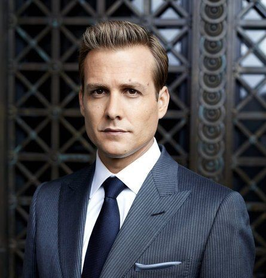
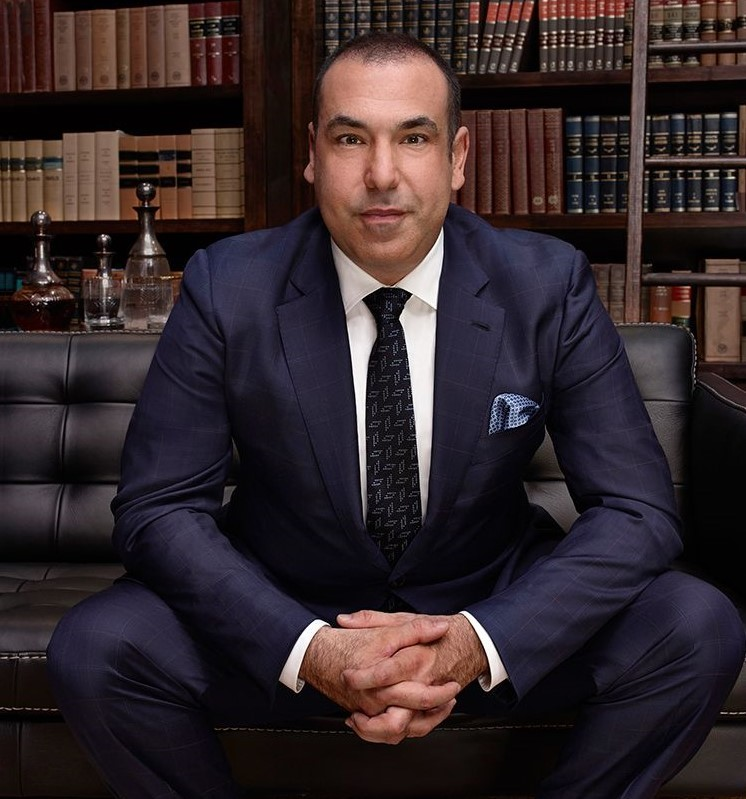
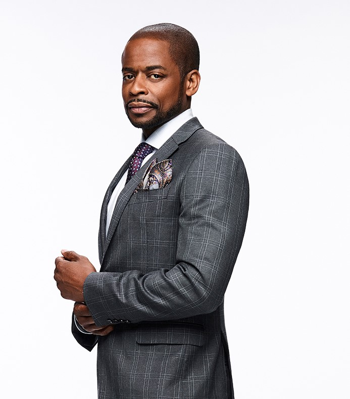
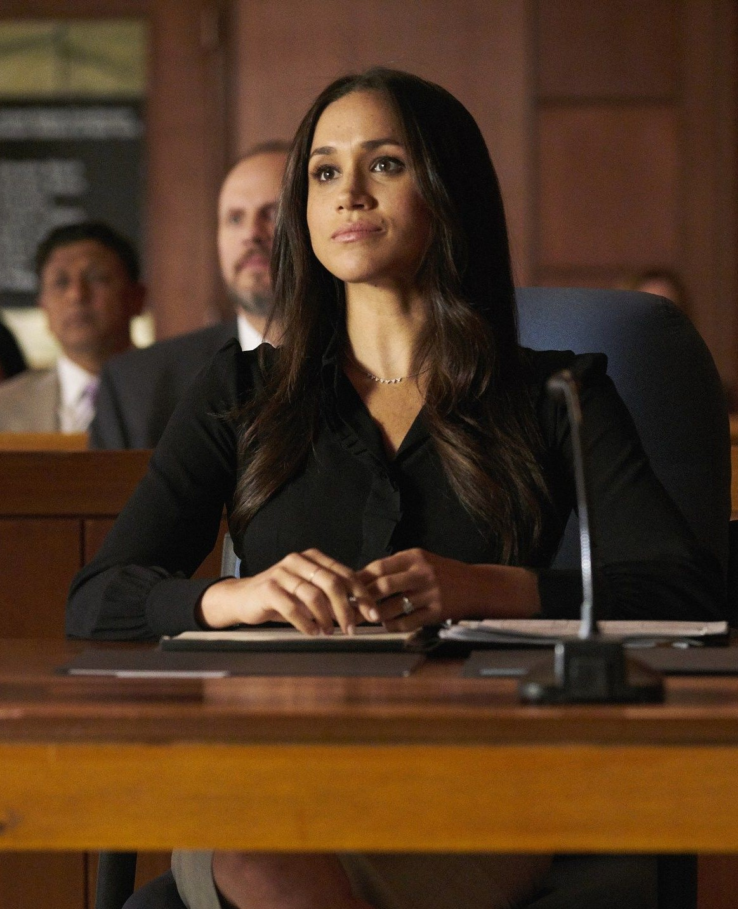
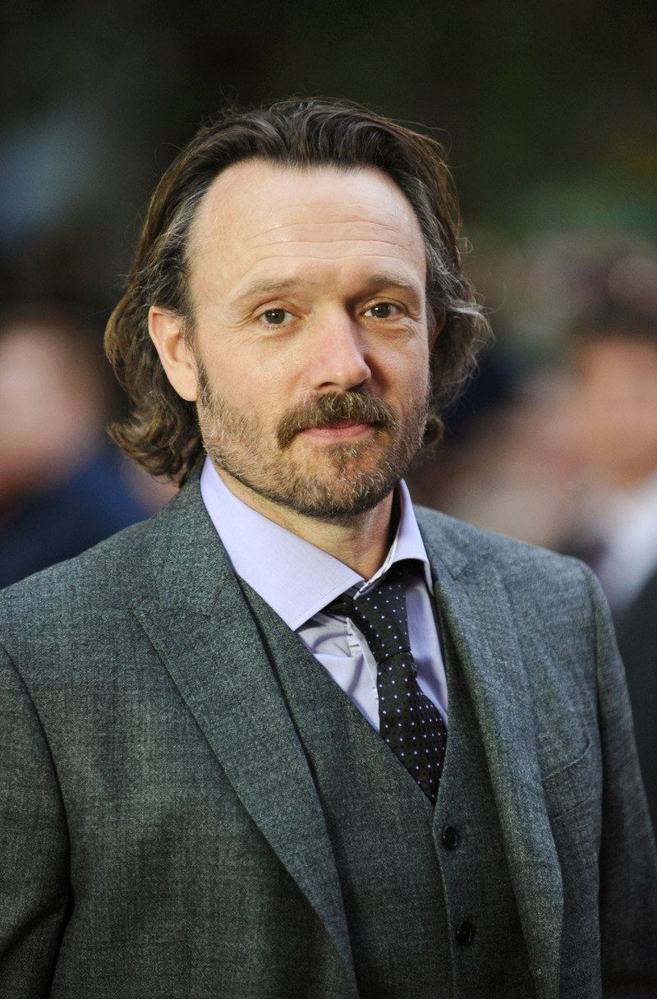
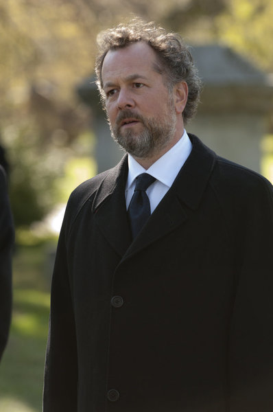
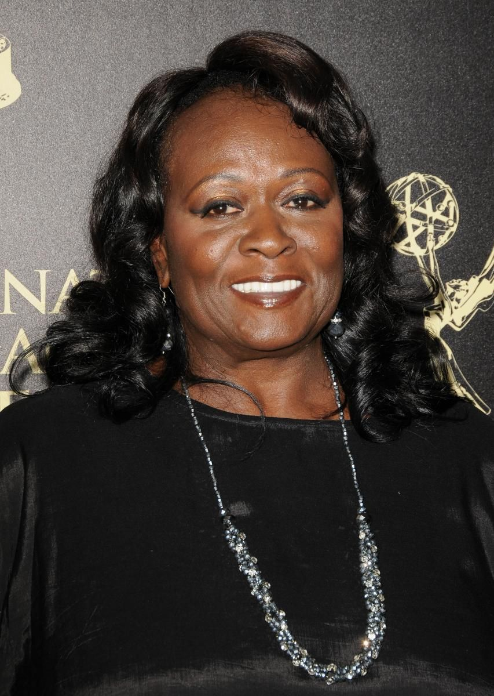

Jessica pearson
Jessica Lourdes Pearson, J.D. is the former managing partner of Pearson Specter Litt and current
aide to the mayor of Chicago. She began to her legal career after being hired by Charles Van Dyke,
one of the three name partners at Gordon Schmidt Van Dyke, due to the fact that she was black and
female and the firm wished to fulfill a diversity quota. She made her way up the firm's ranks and,
after becoming a senior partner, conspired with Daniel Hardman to oust the three partners and
restructure the firm as Pearson Hardman, with Hardman taking over the reins.

Harvey Specter
Harvey Reginald Specter, J.D. is a former corporate attorney, one of the name partners at Specter
Litt Wheeler Williams, the managing partner of Specter Litt, and a former Assistant District
Attorney for the New York County District Attorney's Office. He is also the husband of Donna
Paulsen. After being promoted to the position of senior partner at Pearson Hardman in 2011, he hired
Mike Ross, a veritable genius with a photographic memory who was able to pass the bar exam despite
not attending law school, as his associate.

Louis Litt
Louis Marlowe Litt, M.B.A., J.D., Esq. is a corporate attorney and the managing and name partner of
Litt Wheeler Williams Bennett. He was promoted to the position of senior partner at Pearson Hardman
by Daniel Hardman prior to the latter's second dismissal from the firm, and was also the
quartermaster of Pearson Darby. Louis initially resigned from Pearson Specter to prevent Jessica
Pearson or Harvey Specter from firing him after he embezzled money for Charles Forstman, but after
discovering that Mike Ross was a fraud and that the others covered it up.

Donna Paulsen
Donna Roberta Paulsen is the former Chief Operating Officer of Specter Litt Wheeler Williams and the
wife of Harvey Specter, having originally worked as his legal secretary for over twelve years.
She briefly left him to work for Louis Litt; however, Louis fired her so that she could go back to
work for Harvey. Wanting more out of her life, she convinced Harvey to promote her to senior partner
despite her lack of legal knowledge or credentials, which Harvey agreed to as he believed the firm
could not operate without her. However, Harvey was reminded by Katrina Bennett, Louis Litt and
Jessica Pearson that partnership wasn't a title meant to be given to anyone, and was instead given
the position of COO instead.

Alex Williams
Alex Williams, J.D. is a corporate attorney and a name partner at Litt Wheeler Williams Bennett.
While playing poker with Harvey Specter, Alex proposes that Harvey join Bratton Gould and that the
two of them become junior partners. While Thomas Bratton is interesting in poaching one from Skadden
instead, he is willing to promote Harvey and Alex to junior partner under the condition that Harvey
gives his word that he will leave Pearson Hardman to join them, which Harvey does. However, as
Harvey begins to pack up his things, Jessica Pearson apologizes if he has been mistreated and
informs him that she has made a deal with Daniel Hardman that Harvey would be the firm's next junior
partner, and Harvey decides to stay.
Mike Ross
Michael James "Mike" Ross is a former lawyer and junior partner at Specter Litt, a former legal
consultant/supervisor at the Eastside Legal Clinic, with whom he had a legal partnership with, and a
former investment banker at Sidwell Investment Group. He is married to Rachel Zane. He was hired by
Harvey Specter, a senior partner at Pearson Hardman, as an associate lawyer, despite Mike not having
graduated college or having a law degree. Mike left Pearson Specter after accepting the job offer to
work at SIG; however, he returns later in season 4 after Jonathan Sidwell fired him from his firm
Shortly after his return, Louis Litt discovered his fraud and leveraged it to become name partner.

Rachel Zane
Rachel grew up under the shadow of her father, Robert Zane, a skilled lawyer and name partner of
Rand, Kaldor & Zane. Despite her family's wealth, she prefers to live on the money that she earns.
Despite her own ability, Rachel has never been good with taking tests, so she never gets a high
enough LSAT score for Harvard. Unable to get into law school, she decided to begin working as a
paralegal at Pearson Hardman. Because of this, Robert began to doubt Rachel's capabilities as a
lawyer. Rachel worked as a paralegal for nearly six years before finally achieving an LSAT score
high enough for Columbia Law School.
Katrina Bennet
Katrina Amanda Bennett is a corporate attorney and a name partner at Litt Wheeler Williams Bennett.
Initially an Assistant District Attorney, she wished to jump into corporate law like Harvey Specter
and agreed to help him on a case provided he hire her as a senior associate at Pearson Hardman,
where she became Louis Litt's go-to associate. After Louis resigned from Pearson Specter due to tax
evasion, she helped him poach one of the firm's clients that he wished to offer to Robert Zane so
that he could gain employment at Rand, Kaldor & Zane, promising to bring her along if she complied.
Scotti
Dana J. Scott, J.D. is a name partner at her current law firm, a former senior partner at Pearson
Specter and Harvey Specter's ex-girlfriend. Dana Scott graduated Harvard Law School as the top of
her class during the year that Harvey graduated as the 5th (though he was supposedly jerking off
according to Jessica Pearson). Harvey and Dana met in Harvard Law School where their relationship
began. In the episode "Play the Man", she tells Harvey that she is going to be engaged when she
returns to London. In her return in "Normandy", she and Harvey agree to work together and she
reveals that she never married.

Jack Soloff
Jack Edward Soloff is a corporate attorney and a senior partner. Initially working for Pearson
Specter Litt, he was the head of the its compensation committee and was responsible for Mike Ross'
promotion to junior partner. However, he abandoned the firm alongside the other partners following
Mike's conviction, joining Rand, Kaldor & Zane. Jack makes his first appearance in the second
episode of season 5, "Compensation", where he is waiting outside the office of Louis Litt. He
proposes that as the new head of the compensation committee, the compensation formula should be
altered.

Daniel Hardman
Daniel Hardman, J.D. was the co-founder of Pearson Hardman. He is an attorney and was the former
managing partner before Jessica Pearson and Harvey Specter threatened to expose his affair to Alicia
Hardman, his wife, who had cancer. His actions on the later half of season 2, forced Jessica to
merge with Edward Darby to create Pearson Darby, which later got renamed to Pearson Darby Specter.
When Jessica and I found out that Daniel was embezzling from clients, we confronted him. He broke
down. He said his wife had cancer, and he needed the money to try and save her life.

Gretchen
Gretchen Bodinski is an executive assistant at Litt Wheeler Williams Bennett and is Louis Litt's
personal legal secretary.
She made her first appearance in "Compensation", the second episode of the fifth season. She was
hired after Donna Paulsen left Harvey Specter to work for Louis. She eventually swapped place with
Donna after it became evident Mike Ross was facing prison charges. Donna returned to Harvey's desk
after this. Gretchen was employed for 24 years as an
executive assistant in the in-house legal department of Randell Shone Associates, working in Estate
Management and Directive Compliance